குவா காட்டில் முட்டாள் பாம்பு சிறுவர் கதை
குவா காட்டில் முட்டாள் பாம்பு சிறுவர் கதை-The Clever Owl and the Greedy Snake குவா காட்டுல புத்திசாலித்தனமா வேட்டையாடி வாழ்க்கை நடத்திக்கிட்டு வர்ற நிறைய மிருகங்கள் இருந்தாலும் தன்னோட தந்திர புத்தியால அடுத்த மிருகங்கள துன்புறுத்தி அவங்களோட குட்டிகளை பிடிச்ச்சும் முட்டைகள சாப்பிட்டும் நிறைய மிருகங்கள் வாழ்ந்துகிட்டு வரத்தான் செஞ்சுச்சு
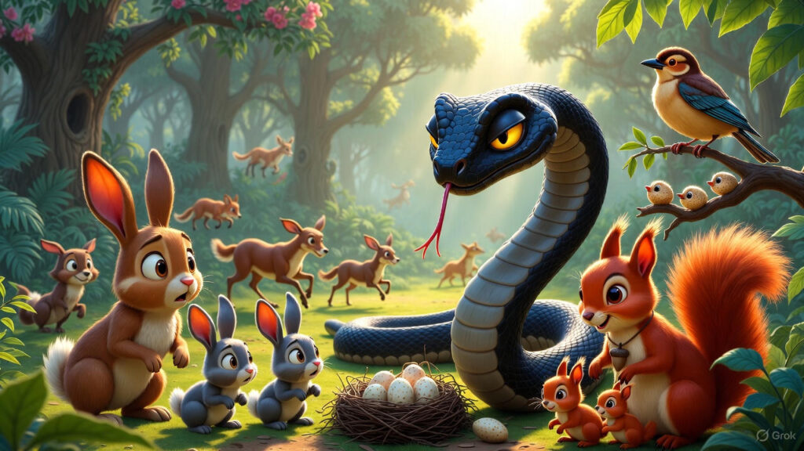
அப்படி ஒரு கருப்பு பாம்பு அங்க இருக்கிற மிகப்பெரிய ஆலமரத்துக்கு அடியில வாழ்ந்துகிட்டு வந்துச்சு அந்த ஆலமரம் ரொம்ப பெருசுங்கறதுனால அதை சுத்தி நிறைய குட்டி மிருகங்கள் வாழ்ந்துகிட்டு வந்துச்சு, அதுங்கள அந்த கருப்பு பாம்பு தன்னோட பலத்தால பயமுறுத்தியும் அதுகளோட குட்டிகளை பிடிச்சு முட்டைகளை திருடி இல்லாத தொந்தரவு எல்லாம் செஞ்சுச்சு
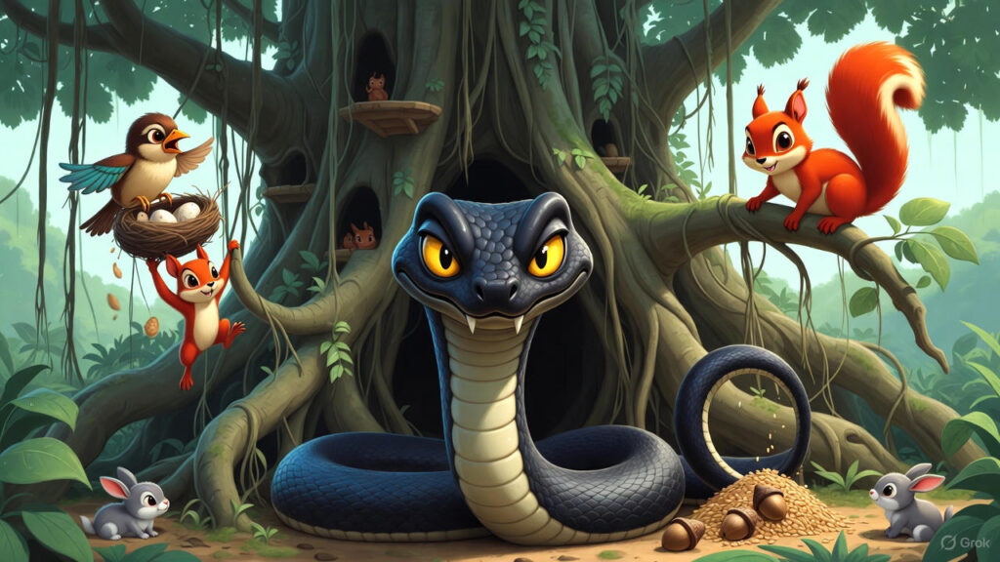
சேட்டை செய்யுற கருப்பு பாம்பை வெறுத்த மத்த உயிரினங்கள் எல்லாம் ஒன்று கூடி ஒரு நாள் இதுக்கு மேல பொறுத்துக்க முடியாது இந்த பாம்பை ஒரு வலி செஞ்சாதான் நமக்கு ஒரு விமோசனம் கிடைக்கும் ஒவ்வொரு நாளும் இந்த பாம்போட தொல்ல அதிகமாயிக்கிட்டே வருது நாம சேமிச்சு வைக்கிற பண்டங்களை திருடி தின்னுடுது அப்படின்னு சொல்லுச்சு முயல்.
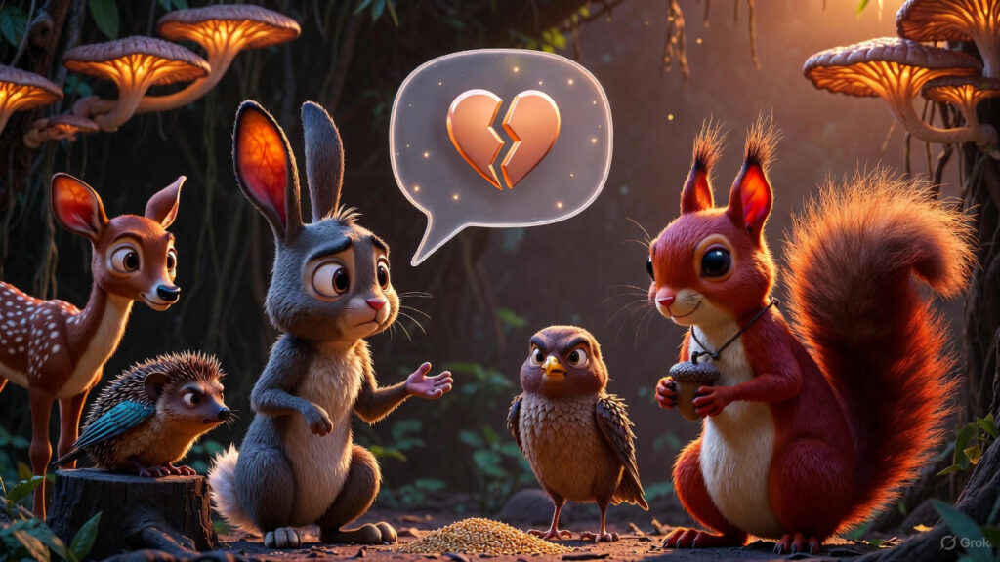
என்னோட குட்டிகள நிம்மதியா வீட்டுல விட்டுட்டு போக முடியல நான் இல்லாத நேரம் என்னோட வீட்டை சூழ்ந்து என்னோட குட்டிகளை ரொம்ப பயமுறுத்துது இந்த பாம்பு அப்படின்னு சொல்லுச்சு அணில் குட்டி புறா சொல்லுச்சு எப்ப பார்த்தாலும் நான் முட்டையிடுற கூட்ட பிரித்து போட்டுட்டு கீழே விழுகிற முட்டைகளை தின்னு உயிர் வாழுது இந்த பாம்பு இதற்கு ஒரு முடிவு கட்டியே ஆகணும் அப்படின்னு சொல்லுச்சு புறா.
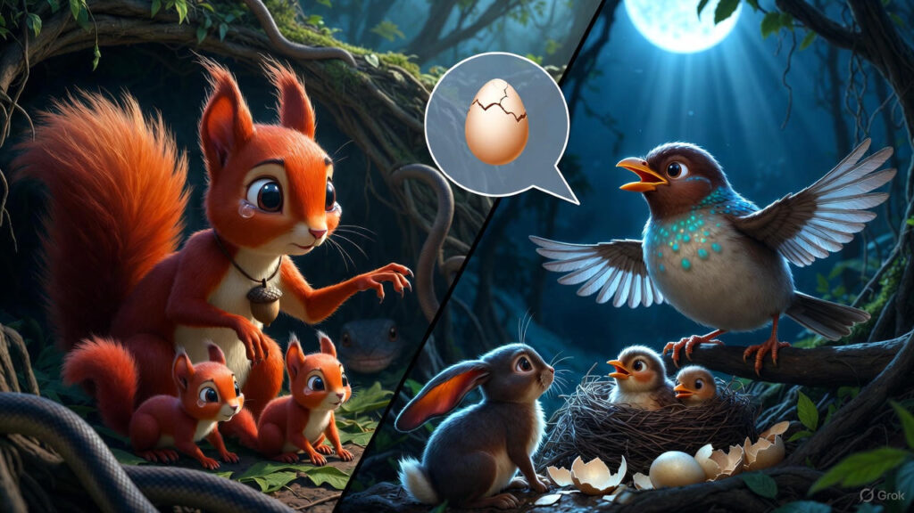
இதையெல்லாம் அற தூக்கத்தில் கேட்டு கிட்டு இருந்துச்சு அங்கே இருந்த கூட்டுல வாழ்ந்து கிட்டு வந்த ஒரு புத்திசாலி ஆந்த ஒன்னு நீங்க எல்லாம் ஒன்னு சேர்ந்து முயற்சி செஞ்சீங்கன்னா இந்த பாம்பை நீங்களே சுலபமாக விரட்டிடலாம் அப்படின்னு சொல்லுச்சு, அதுக்கு ஏதாவது திட்ட வச்சிருக்கீங்களா அப்படின்னு கேட்டுச்சு முயல்
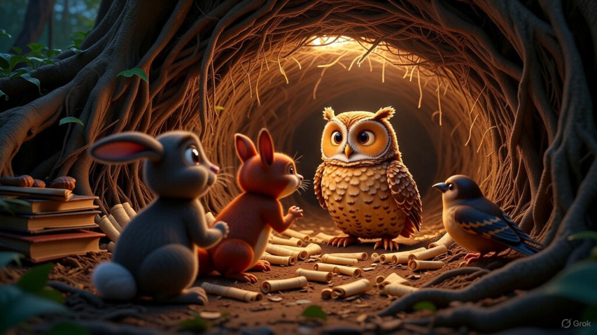
அதுக்கு உங்களுக்கு ஒரு பலசாலியான நண்பன் நான் இருக்கேன் சாதுர்யமான நண்பன் ஒருத்தன் தேவை பக்கத்து மரத்துல வாழுற ஒரு குரங்கு இருக்கு அந்த குரங்கு நீங்க கேட்டுகிட்டீங்கன்னா உங்களுக்கு உதவி செய்யும் நீங்க போய் உங்க குறைகளை அதுகிட்ட சொல்லி அதை போய் கூட்டிட்டு வாங்க அப்படின்னு சொல்லிச்சு அந்த
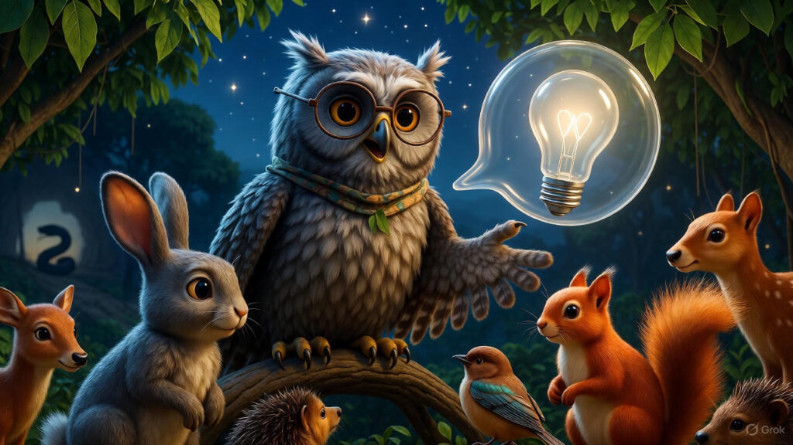
உடனே அணிலும் புறாவும் முயலும் பக்கத்து மரத்துகிட்ட போயி அங்க வாழைப்பழம் சாப்பிட்டுக்கிட்டு இருந்த குரங்கு கிட்ட குரங்காரே குரங்காரே எங்கள் வாழ்க்கையை கொஞ்சம் காப்பாத்துங்க தயவு செஞ்சு இந்த திமிர் பிடித்த கருப்பு பாம்பு கிட்ட இருந்து எங்களை காப்பாத்துங்க அப்படின்னு சொல்லிச்சு
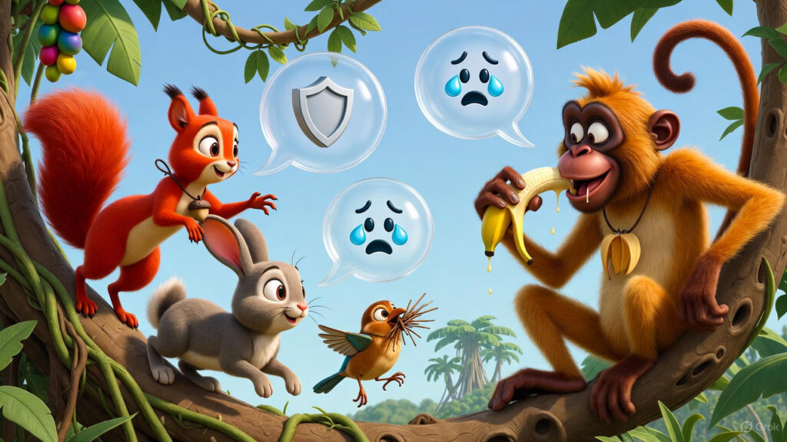
அப்பத்தான் குரங்கு சொல்லுச்சு எனக்கு வேணா கொஞ்சம் சாதுர்யமும் பலமும் இருக்கலாம் ஆனால் பாம்பு அடிச்சு கொள்ற அளவுக்கு எனக்கு துணிவும் பலமும் கிடையாது அதனால என்ன விட்டுருங்க அப்படின்னு சொல்லிச்சு
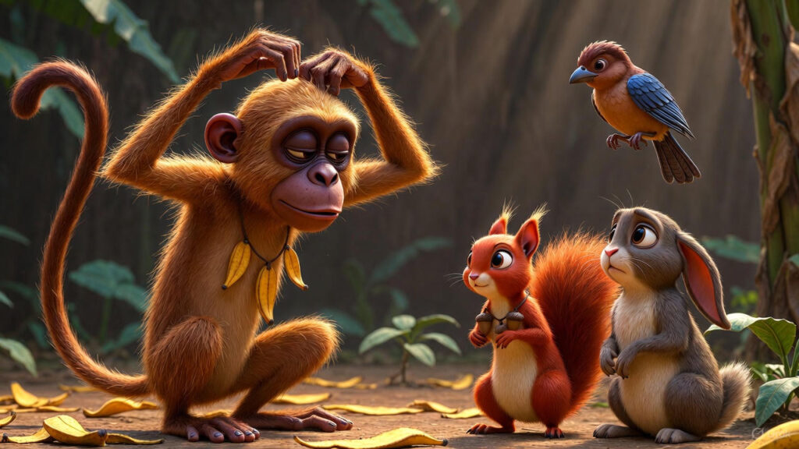
அப்பத்தான் அங்க வந்து உட்கார்ந்துச்சு புத்திசாலி ஆனந்த குரங்காரே உங்க பலத்த பத்தி எனக்கு தெரியும் அந்த பாம்போட பலத்த பற்றியும் தெரியும் பலசாலியான அந்த பாம்பை சமாளிக்கிறதுக்கு உங்களோட பலம் பத்தாதுன்னு எனக்கு தெரியும் இருந்தாலும் உங்ககிட்ட உதவி கேட்க இதுங்க வந்து இருக்குங்க இதுகளுக்கு உதவி செய்வதற்கு நீங்க தயாரா இருந்தீங்கன்னா உங்களுக்கு நான் ஒரு யோசனை சொல்றேன் அதுபடி செஞ்சீங்கன்னா இந்த பாம்பு தொல்லையிலிருந்து இந்த மிருகங்கள் விடுபட்டிரும் அப்படின்னு சொல்லுச்சு அந்த ஆந்த
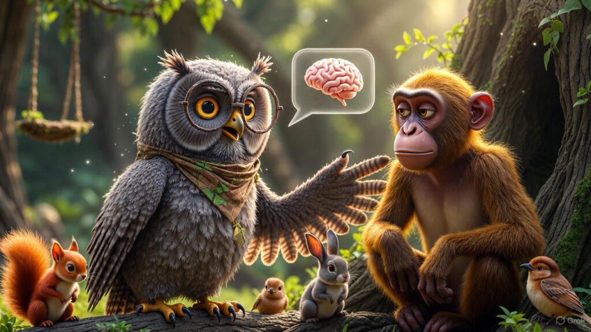
இத கேட்ட குரங்குக்கு மனசு இளகிருச்சு உடனே நீங்க என்ன சொன்னாலும் செய்றேன் ஆந்தையாரே அப்படின்னு சொல்லுச்சு உடனே நீங்க அந்த பாறை மேலே ஏறி போயி தேன் கூட்டு கிட்ட போங்க அங்கிருந்து ஒரு குட்டி தேன்குட்டை பிச்சி கொண்டு வந்து அந்த பாம்பு வாழுற குகைக்கு வெளியில போடுங்க அப்படின்னு சொல்லுச்சு,
அப்படி எதுக்கு செய்ய சொல்றீங்க அப்படின்னு குரங்கு கேட்டதுக்கு பதில் ஏதும் சொல்லாத தன்னோட கூண்டுல போய் படுத்து தூங்கிருச்சு அந்த
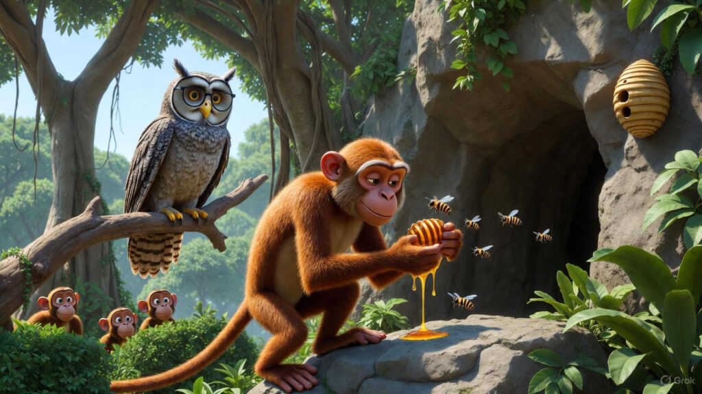
குட்டி மிருகங்களுக்கு உதவி செய்யணும்னு நெனச்ச குரங்கும் அதே மாதிரி செஞ்சுருச்சு புதுசா தேன் கூடு தன் வீட்டுக்கு முன்னாடி இருக்கிறதை பார்த்த பாம்பு அதை கடிச்சு தேன் புழிஞ்சு சாப்பிட்டுச்சு பாம்பு ரொம்ப உற்சாகமாயிருச்சு அடடா இன்னைக்கு யார் முகத்துல முழிச்சோம்னு தெரியல இன்னைக்கு நமக்கு சரியான விருந்து அமைச்சிருக்கு அப்படின்னு தேனோட சுவையில மயங்கி போயி சொல்லிட்டு அங்க இருந்து போயிருச்சு
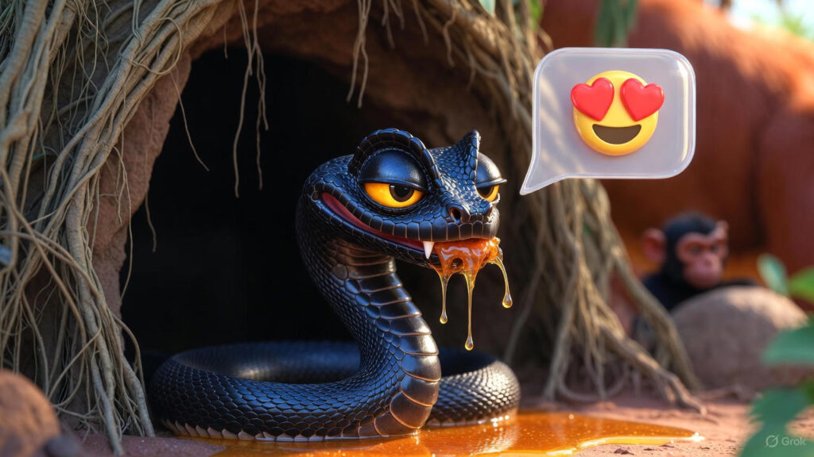
மறுநாள் இதையே திரும்பவும் செய்யச் சொல்லுச்சு அந்த ஆந்த ,ஆந்த சொன்னா மாதிரியே இன்னொரு தேன்கூட்ட கொண்டு வந்து பாம்புக்கு முன்னாடி போட்டாங்க பாம்பு அது சந்தோசமா பிச்சி சாப்பிட்டு நிம்மதியா போயிருச்சு இதே மாதிரி ஒரு வாரம் முழுவதும் நடந்துச்சு,
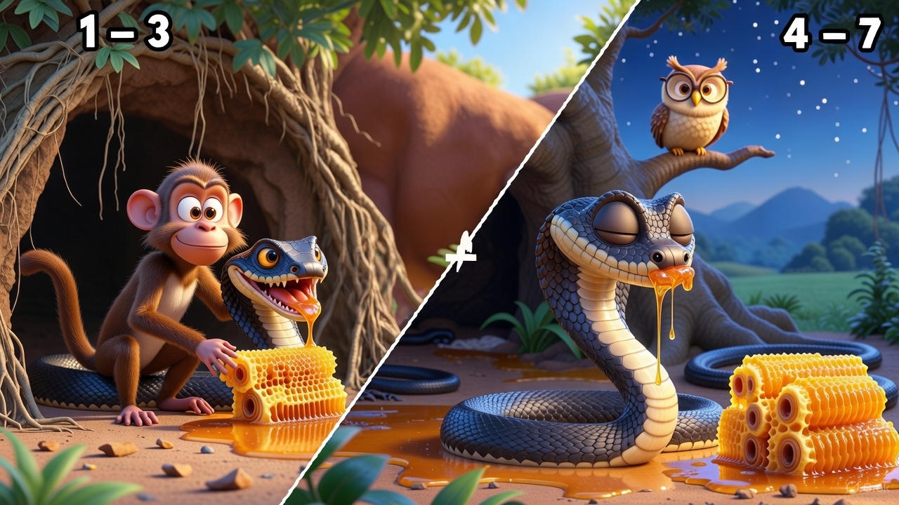
எதுக்கு இது மாதிரி ஆந்தையார் செய்ய சொல்றாருன்னு குரங்குக்கு குழப்பமா இருந்தாலும் குட்டி மிருகங்களை காப்பாத்தணும் என்கிற நோக்கத்துல தொடர்ந்து இந்த வேலைய செஞ்சிக்கிட்டே இருந்துச்சு
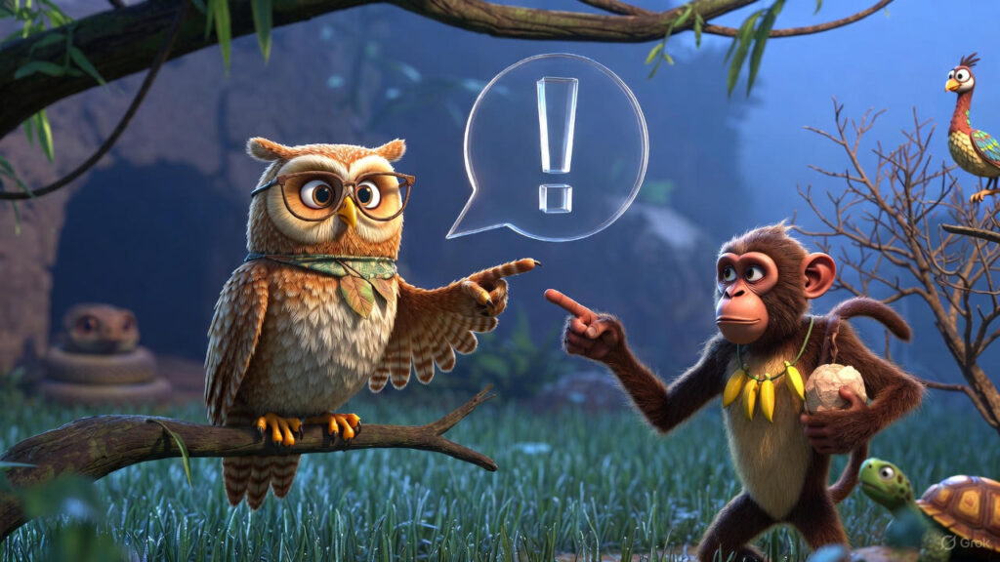
ஆஹா இன்னைக்கும் ஒரு தேன் கொடு விழுந்து கிடக்கு இதை நான் சாப்பிட போறேன்னு அதை ஒரு கடி கடிச்சுச்சு பாம்பு அப்பத்தான் உள்ள இருந்த குளவிகள் கொஞ்சமா வெளியில வந்து பாம்பை கொட்ட ஆரம்பிச்சுருச்சு அப்ப ஒரு பெரிய கல்லை தூக்கிட்டு வந்த அந்த அந்த குளவி கூட்டு மேல போட்டுச்சு ஆந்த உடனே உள்ளே இருந்த எல்லா குழவிகளும் மேலே ஏறி வந்து பாம்பை கடிச்சு கொட்டு கொட்டுனு கொட்டி துன்புறுத்த ஆரம்பிச்சிருச்சுங்க தன்னை காப்பாத்திக்கிறதுக்காக காட்டோட உள்பகுதிக்கு ஓடிப்போயிருச்சு பாம்பு
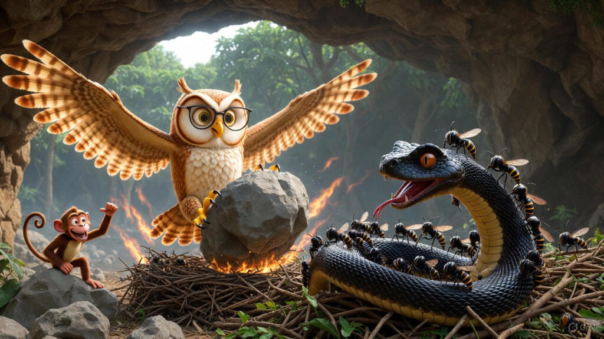
அதுக்கப்புறம் அந்த கொடூர பாம்போட தொல்லை அந்த காட்டுக்கு இல்லாம போச்சு அதுக்கப்புறம் நிறைய குட்டி அணில்களை பெத்து கிடுச்சு அணில், தன்னோட குட்டிகளை சுதந்திரமா வெளிய விளையாட விட்டது முயல், புறாக்கள் புதுசா நிறைய முட்டை இட்டுச்சீங்க அதை அடைகாத்து அதில் இருந்து நிறைய புறாக்கள் வந்துச்சுங்க குட்டி குட்டி புறாக்கள் புதுசா பிறந்தது
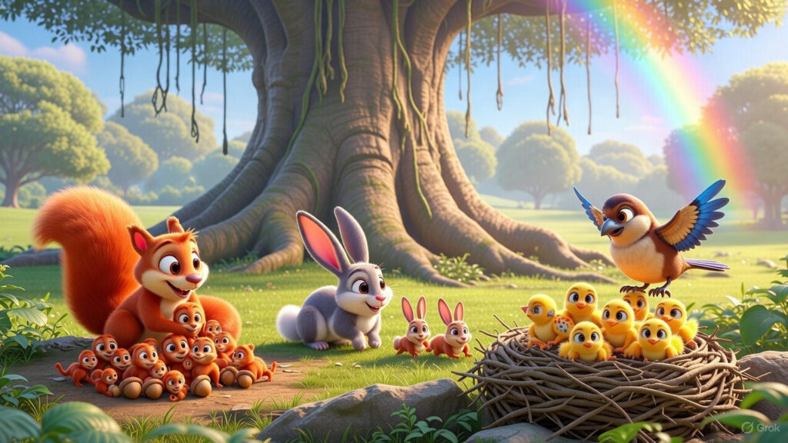
உன்னோட புத்திசாலித்தனாளையும் குரங்காரோட சாதுரியமான செயல்னாளையும் தாங்கள் காப்பாற்றப்பட்டது நினைச்சு அவர்களோடு நண்பர்களாக சேர்ந்து தங்களுடைய வாழ்க்கையை தொடர்ந்து செய்ய அந்த மிருகங்கள்
நன்றி